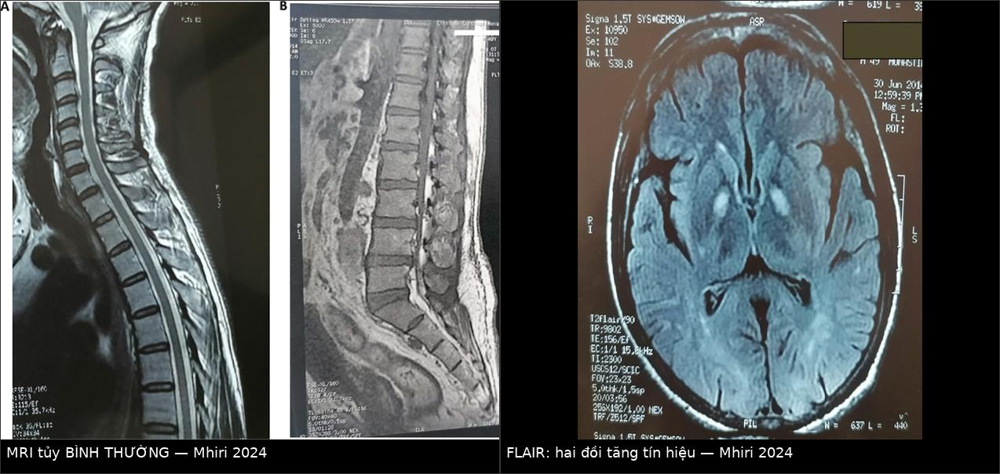
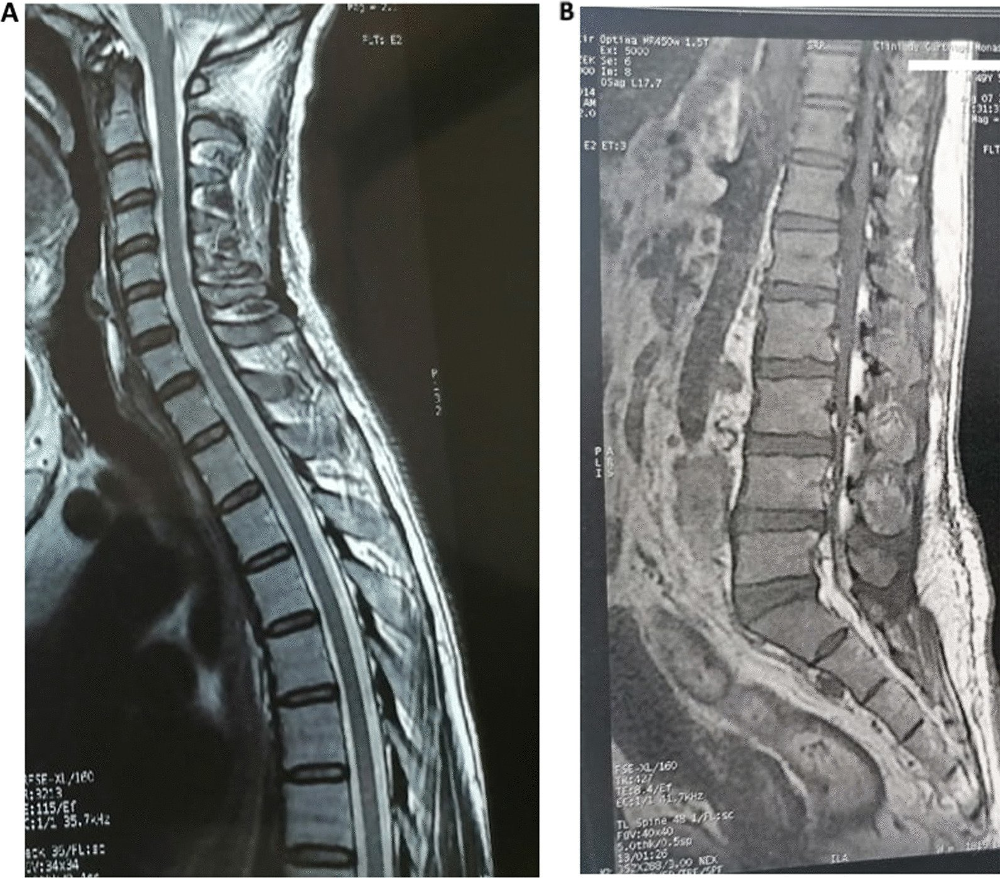
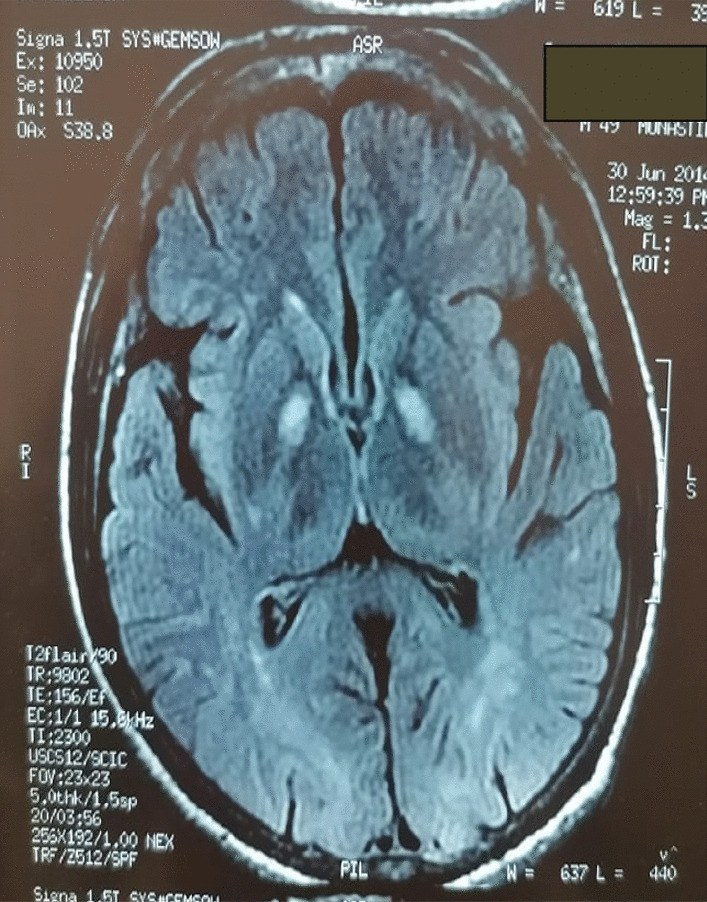
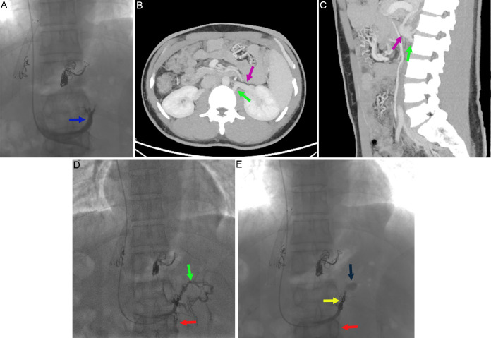
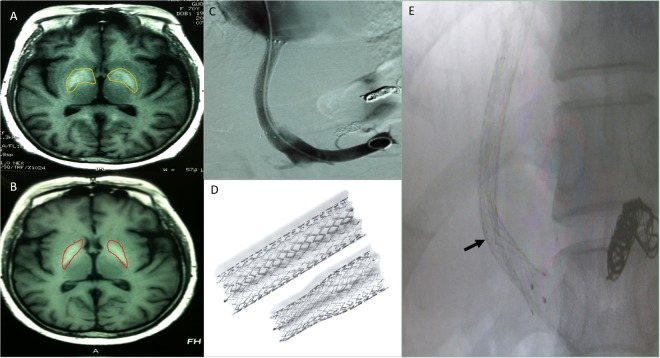

188 — Bệnh tủy do gan sau shunt cửa–chủ / TIPS: chẩn đoán loại trừ & khi nào can thiệp shunt / Hepatic myelopathy after portosystemic shunt
Tags: pattern:liet-cung pattern:bien-nao-gan vung:tuy-song vung:gan vung:mach-cua score:Child-Pugh score:MELD protocol:MRI-tuy-va-nao protocol:MEP
Mức chắc chắn (certainty): tổng hợp y văn (literature synthesis) — số liệu dịch tễ, thời gian tiềm tàng và kết cục lấy từ nghiên cứu hồi cứu 29 bệnh nhân sau TIPS (Zhao H et al., Sci Rep 2018, PMC6185955, CC BY); ca lâm sàng có hình ảnh từ Mhiri M et al., J Med Case Rep 2024 (PMC11181619, CC BY), Suo Y et al., J Clin Transl Hepatol 2026 (PMC13247707, CC BY-NC) và ca hồi phục sau ghép gan (PMC11588450, CC BY). Không có tiêu chuẩn chẩn đoán đồng thuận chính thức — bài ghi rõ chỗ nào là "tiêu chuẩn dùng trong y văn", chỗ nào là suy luận.
Câu hỏi gốc của bài: bệnh nhân xơ gan, đã đặt TIPS (hoặc có shunt cửa–chủ tự phát), vài tháng đến vài năm sau đi lại nặng dần, chân cứng, dáng đi "kéo lê"; khám thấy tăng phản xạ, Babinski hai bên, nhưng không rối loạn cảm giác, không rối loạn cơ tròn, không lú lẫn. Chụp MRI tủy sống… bình thường. Vậy: đây là bệnh gì? có phải bệnh não gan không? MRI bình thường thì loại trừ được gì? và có cách nào cứu không? Điểm tựa: bệnh tủy do gan (hepatic myelopathy — HM) là biến chứng của shunt cửa–chủ, không phải của tăng amoniac đơn thuần và không phải bệnh não gan. Chẩn đoán là loại trừ, hình ảnh tủy thường bình thường, và thời gian từ lúc khởi phát đến lúc can thiệp quyết định khả năng hồi phục.
1. Tổng quan — vì sao tủy bị tổn thương mà MRI tủy lại bình thường
A. Bệnh học (pathology) và sinh lý bệnh:
- Tổn thương giải phẫu: hủy myelin đối xứng của bó tháp bên (lateral corticospinal tract) ở tủy ngực–thắt lưng, dẫn đến liệt cứng (spastic paraparesis) thuần vận động. Đây là lý do khám thuần vận động: cảm giác và cơ tròn thường nguyên vẹn vì các bó cảm giác (sau/tủy trước bên) và bó vỏ–tủy cho cơ tròn ít bị ảnh hưởng.
- Vì sao có shunt mới bị: chất độc chuyển hóa nitơ (amoniac và các sản phẩm thoái hóa nitơ khác) bình thường được gan khử; khi có shunt cửa–chủ lớn (TIPS, shunt phẫu thuật, shunt tự phát) → thuốc độc đi thẳng vào tuần hoàn hệ thống, vượt hàng rào máu–tủy. Cơ chế được đề xuất gồm nhiễm độc, thiếu dinh dưỡng (B12/đồng), thay đổi huyết động tủy, và tổn thương miễn dịch — chưa có mô hình động vật chuẩn.
- Vì sao MRI tủy thường BÌNH THƯỜNG: tổn thương là mất myelin vi thể lan tỏa dọc bó tháp, không tạo ổ phù/hoại tử đủ lớn để đổi tín hiệu trên T2. Vì vậy MRI tủy bình thường KHÔNG loại trừ HM — đây là điểm khác biệt căn bản với chèn ép tủy, u tủy, myelitis, nhồi máu tủy (những bệnh phải thấy bất thường trên MRI).
- Vì sao MRI não lại có bất thường: tăng tín hiệu T1 đối xứng ở globus pallidus/hai đồi là dấu hiệu của tuần hoàn bàng hệ cửa–chủ (được cho là do lắng đọng mangan — kim loại thuận từ làm ngắn T1). Dấu hiệu này gặp trong bệnh não gan và bệnh não–não mắc phải (acquired hepatocerebral degeneration), không đặc hiệu cho HM và không phải tổn thương tủy. Giá trị thực dụng: nó xác nhận "có shunt đáng kể" khi bạn đang phân vân.
B. Ngưỡng định lượng bắt buộc (cửa 1 Argon):
| Đại lượng | Con số đã kiểm chứng | Ý nghĩa thực hành |
|---|---|---|
| Tần suất HM sau TIPS | 1,04% (36/3467) bệnh nhân TIPS trong 22 năm (PMC6185955) | Hiếm nhưng đủ gặp ở trung tâm lớn → phải nghĩ tới |
| Tuổi trung bình khi mắc | 39,5 ± 6,3 và 40,2 ± 3,3 tuổi (2 nhóm) | Người trẻ — đừng quy cho "thoái hóa cột sống tuổi" |
| Giới | 22/29 (75,9%) là nam | Gợi ý dịch tễ, không dùng để chẩn đoán |
| Thời gian từ TIPS → triệu chứng | 9,81 ± 7,09 tháng (nhóm can thiệp) và 8,31 ± 6,82 tháng (nhóm nội khoa); ca khác 5 tháng; ca khác 4 năm | Cửa sổ 6–12 tháng là điển hình, nhưng 4 năm vẫn xảy ra |
| PSG trước / sau TIPS | 19,38 ± 2,80 → 8,63 ± 0,89 mmHg | Sau TIPS PSG ~8–9 mmHg = "quá tải shunt" — cùng cơ chế với bài 183 |
| Đường kính stent ban đầu | 8 mm (56%), 10 mm (44%) | Stent lớn hơn → shunt lớn hơn |
| Amoniac máu | 76,88 ± 5,03 → 70,69 ± 3,95 (đơn vị như bài gốc báo cáo) | Amoniac giảm sau điều trị nhưng không phải tiêu chuẩn chẩn đoán |
| Child–Pugh / MELD lúc chẩn đoán | 7,5 ± 1,41 / 9,88 ± 1,54 | Đa số Child–Pugh B — tức không phải chỉ bệnh nhân suy gan nặng |
| EMG chi dưới | Bình thường ở 26/29 ca | EMG bình thường không loại trừ; tổn thương là bó tháp trung ương |
| Sống trung bình: can thiệp shunt vs nội khoa | 30 tháng vs 16,5 tháng (log-rank p = 0,017; HR 0,322; KTC 95% 0,109–0,948) | Can thiệp shunt đúng lúc có lợi về sống còn |
| Tử vong trong nhóm theo dõi | 12,5% (2/16) vs 30,77% (4/13) | Nhóm chỉ điều trị nội khoa tử vong cao hơn |
| Cải thiện vận động | Fugl–Meyer cải thiện ở nhóm can thiệp (t = 4,818; p = 0,0002) nhưng không ở nhóm nội khoa (p = 0,7711); Barthel tương tự | Chỉ giảm shunt mới cải thiện được chức năng, không phải thuốc |
C. TẠI SAO ảnh trông như vậy (vật lý hình ảnh):
- MRI tủy T1/T2/STIR: tủy bình thường vì không có phù (phù làm T2 sáng) và không có thay thế mô (làm T1 tối). Mất myelin vi thể không đủ tạo tương phản không gian ở 1,5–3T.
- MRI não T1 (không cản quang): tăng tín hiệu ở globus pallidus do mangan (thuận từ, rút ngắn T1 → sáng trên T1, không sáng trên T2/FLAIR) — nguyên lý: mangan tích tụ ở hệ ngoại tháp khi mất khả năng thải qua đường mật do shunt.
- FLAIR: tăng tín hiệu hai đồi có thể thấy như trong ca minh họa — nhưng đây là dấu hiệu của bệnh não gan/bàng hệ, không phải của tủy. Đừng "chụp não để tìm HM" — chụp não để loại trừ bệnh khác và xác nhận shunt.
2. Mẫu hình + chẩn đoán phân biệt theo cơ chế (Gamut)
- Nhóm 1 — HM (shunt cửa–chủ): liệt cứng đối xứng, tiến triển, thuần vận động, không rối loạn cơ tròn/cảm giác, không fasciculation, MRI tủy bình thường, có bằng chứng shunt (TIPS, shunt phẫu thuật, bàng hệ lớn trên CT).
- Nhóm 2 — Bệnh não gan (HE): lú lẫn, ngủ gà, asterixis, run vỗ cánh, có thể kèm yếu chi do phù/tri giác nhưng không phải liệt cứng đối xứng; dao động theo thời gian.
- Nhóm 3 — Bệnh não–não mắc phải (acquired hepatocerebral degeneration): parkinsonism, ataxia, múa giật, rối loạn vận động, T1 sáng hai đồi; không phải liệt cứng thuần.
- Nhóm 4 — Thiếu B12/đồng, ngộ độc N₂O (khí cười): tổn thương cột sau → mất cảm giác sâu, mất thăng bằng, dáng đi thất điều, không phải liệt cứng thuần; MRI tủy T2 sáng cột sau (dấu "inverted V").
- Nhóm 5 — Chèn ép tủy (thoái hóa cột sống, u, áp-xe, máu tụ): MRI tủy PHẢI thấy chèn ép/tín hiệu bất thường; có đau cột sống, rối loạn cơ tròn thường có.
- Nhóm 6 — Viêm tủy/NMO/MS/HTLV-1/HIV: rối loạn cảm giác rõ, rối loạn cơ tròn, tổn thương dài > 3 đốt, MRI có tăng tín hiệu, dịch não tủy bất thường.
- Nhóm 7 — ALS và liệt cứng di truyền (HSP): thuần vận động giống HM — nhưng không có bệnh gan/shunt, có teo cơ, fasciculation, tổn thương cả bó trên và dưới, tiến triển không liên quan men gan.
- Nhóm 8 — Nguyên nhân khác: xạ trị tủy, nhồi máu tủy (khởi phát đột ngột), myelopathy do thuốc, paraneoplastic.
Mnemonic "SHUNT" cho liệt cứng ở bệnh nhân xơ gan: Shunt (TIPS/phẫu thuật/tự phát — nghĩ HM) · Hepatic encephalopathy (lú lẫn + asterixis) · Uncorrected deficiency (B12, đồng, N₂O) · Neuro khác (MS/NMO/HTLV/ALS/HSP) · Tủy bị chèn ép (thoái hóa, u, áp-xe).
3. Bảng so sánh phân biệt (ma trận đối chiếu)
| Thực thể (entity) | Hình ảnh điển hình | Chốt vào (rule-in) | Chốt loại (rule-out) | Gợi ý xác nhận |
|---|---|---|---|---|
| Bệnh tủy do gan (HM) | MRI tủy bình thường; não: T1 sáng globus pallidus; không có tổn thương tủy | Shunt cửa–chủ + liệt cứng đối xứng thuần vận động + không rối loạn cơ tròn/cảm giác + MRI tủy âm | MRI tủy có ổ tăng T2/chèn ép → không phải HM | Loại trừ B12/đồng/N₂O/MS/HTLV; MEP–CMCT kéo dài |
| Bệnh não gan | Não: có thể T1 sáng hai đồi; không có tổn thương khu trú | Lú lẫn + asterixis + run vỗ cánh, dao động | Tri giác tỉnh, không asterixis, liệt cứng cố định → không phải HE | Amoniac, test nối số; đáp ứng lactulose |
| Bệnh não–não mắc phải (AHD) | T1 sáng hai đồi rõ, có thể teo não | Parkinsonism/múa giật/ataxia + bệnh gan + shunt | Liệt cứng hai chi dưới thuần → nghĩ HM hơn | Khám thần kinh; MRI T1 |
| Thiếu B12/đồng, N₂O | T2 sáng cột sau ("inverted V"), có thể teo tủy | Mất cảm giác sâu + thất điều + dáng đi rộng | Cảm giác bình thường → loại trừ | B12, MMA, homocysteine, đồng/ceruloplasmin; hỏi N₂O |
| Chèn ép tủy do thoái hóa/u | Hẹp ống sống, chèn ép tủy, tăng T2 trong tủy | Đau cột sống + MRI có chèn ép | MRI tủy hoàn toàn bình thường → loại trừ | MRI toàn bộ tủy; CT nếu cần xương |
| Viêm tủy/NMO/MS/HTLV-1 | Tăng T2 dài ≥ 3 đốt, có thể ngấm thuốc | Rối loạn cảm giác + cơ tròn + tổn thương dài | Tổn thương ngắn, không rối loạn cảm giác → ít nghĩ | MRI + dịch não tủy (OCB, IgG index), HTLV-1, HIV |
| ALS | MRI tủy bình thường hoặc teo nhẹ | Teo cơ + fasciculation + tổn thương bó trên và dưới | Không teo cơ, không fasciculation, có bệnh gan/shunt → nghĩ HM | EMG (đơn vị vận động), khám lan rộng |
| Can thiệp shunt (điều trị HM) | DSA: stent hẹp hơn đặt trong stent cũ hoặc nút nhánh bàng hệ; PSG tăng lên | PSG tăng ≥ 3–5 mmHg + cải thiện Fugl–Meyer/Barthel | PSG không tăng hoặc bệnh đã quá muộn (liệt nhiều năm) | DSA + đo PSG trước/sau; theo dõi 3–6 tháng |

Trái: MRI tủy sống T1 + T2 bình thường — không có ổ tăng tín hiệu, không chèn ép. Phải: MRI não FLAIR — tăng tín hiệu đối xứng hai đồi, dấu hiệu của tuần hoàn bàng hệ cửa–chủ (không phải tổn thương tủy). Bài học: chụp tủy để loại trừ, chụp não để xác nhận shunt. Nguồn: Mhiri M et al., J Med Case Rep 2024 (PMC11181619) Fig. 1 và Fig. 2, CC BY 4.0 — ảnh ghép letterbox, đã thay đổi (ghép + dải chú thích).4. Protocol chẩn đoán + can thiệp + theo dõi
A. Chẩn đoán (làm đủ, đừng dừng ở "MRI tủy bình thường"):
- Khám thần kinh có cấu trúc: sức cơ (thang MRC 0–5), phản xạ gân xương, Babinski, cảm giác nông/sâu, cơ tròn (bí tiểu, tiểu không tự chủ, táo bón), fasciculation/teo cơ, khám chi trên (HM thường chỉ hai chi dưới, đối xứng).
- MRI toàn bộ tủy sống (T1, T2, STIR; ± gadolinium) — mục tiêu loại trừ chèn ép/viêm/nhồi máu, không phải "tìm HM".
- MRI não (T1 không cản quang + FLAIR): tìm T1 sáng hai đồi, loại trừ đột quỵ, tổn thương thân não.
- Xét nghiệm loại trừ (bắt buộc): B12, MMA/homocysteine, đồng huyết thanh + ceruloplasmin, HIV, HTLV-1, TSH, vitamin E; hỏi kỹ N₂O (khí cười) và rượu; điện giải (loạn natri).
- Điện sinh lý: MEP (motor evoked potentials) — thời gian dẫn truyền vận động trung ương (CMCT) kéo dài; EMG để loại trừ bệnh thần kinh ngoại biên/đơn vị vận động.
- Đánh giá shunt: CT 3 thì bụng (TIPS, shunt tự phát, shunt cạnh sống — paraspinal vein shunt), DSA + đo PSG khi cân nhắc can thiệp.
B. Quyết định can thiệp (mermaid):
flowchart TD
A[Liet cung hai chi duoi o benh nhan xo gan] --> B[Kham: thuan van dong? co roi loan co tron hoac cam giac?]
B -->|Co roi loan cam giac hoac co tron| C[Doi huong: viem tuy, chen ep tuy, thieu B12 hoac dong]
B -->|Thuan van dong, doi xung| D[MRI toan bo tuy song]
D -->|Co chen ep hoac tang T2| C
D -->|Binh thuong| E[Xet nghiem: B12, MMA, dong, HIV, HTLV-1, N2O]
E -->|Bat thuong| F[Dieu tri nguyen nhan]
E -->|Binh thuong| G{Bang chung shunt cua chu?}
G -->|Khong| H[Xet ALS, HSP, nguyen nhan khac]
G -->|Co| I[Chan doan HM - loai tru]
I --> J{Thoi gian liet bao lau?}
J -->|Duoi 12 thang| K[Uu tien can thiep: giam duong kinh shunt hoac nut nhanh bang he]
J -->|Nhieu nam, liet nang| L[Kha nang hoi phuc thap: chu yeu phuc hoi chuc nang, xet ghep gan]
K --> M[Do PSG truoc va sau; dich tang 3-5 mmHg]
L --> N[Ghep gan la lua chon triet de nhat]
M --> O[Theo doi 3-6 thang: Fugl-Meyer, Barthel, suc co]
C. Điều trị — thứ tự ưu tiên:
- Điều trị nền: kiểm soát yếu tố thúc đẩy HE (táo bón, nhiễm trùng, xuất huyết, thuốc an thần, điện giải), lactulose ± rifaximin, đủ đạm 1,2–1,5 g/kg/ngày (không hạn chế đạm quá mức — gây teo cơ, làm yếu thêm).
- Giảm đường kính shunt (stent-limiting): đặt stent 7–10 mm (loại tapered, ví dụ 7–10 × 40 mm) bên trong stent TIPS 10 mm cũ → tăng PSG. Trong nghiên cứu: 17/17 ca thành công, không biến chứng nặng; biến chứng gặp: giảm tiểu cầu nặng 1 ca, xuất huyết tiêu hóa do loét dạ dày 1 ca, báng khó trị tái phát 3 ca (kiểm soát bằng lợi tiểu).
- Nút nhánh bàng hệ đặc biệt: nếu có shunt tĩnh mạch cạnh sống (paraspinal vein shunt — PVS) — nút bằng coil/plug; ca báo cáo hồi phục vận động sau nút (PMC13247707).
- Ghép gan: phương án triệt để nhất, đặc biệt khi chức năng gan xấu hoặc can thiệp shunt không khả thi; có ca hồi phục rõ sau ghép + phục hồi chức năng (PMC11588450, PMC9243758). Nguyên tắc thời gian: càng sớm càng tốt — tổn thương myelin còn hồi phục ở giai đoạn đầu, không hồi phục khi đã lâu.
D. Theo dõi sau can thiệp:
| Thời điểm | Việc cần làm | Ngưỡng cảnh báo |
|---|---|---|
| 24–48 giờ | Doppler shunt, tri giác, amoniac, điện giải, Hb | Tái xuất huyết hoặc báng cấp = PSG tăng quá tay |
| 1 tháng | Sức cơ MRC, phản xạ, dáng đi; Fugl–Meyer | Không cải thiện 1 bậc MRC → xem lại thời điểm can thiệp |
| 3–6 tháng | Fugl–Meyer, Barthel, MRI tủy lặp nếu xấu đi; Doppler | Cải thiện chậm nhưng có = tiếp tục phục hồi chức năng |
| 6–12 tháng | Đánh giá khả năng đi lại, chất lượng sống; xét ghép gan nếu suy gan tiến triển | Liệt không đổi sau 12 tháng = tiên lượng hồi phục kém |
5. Biến thể bình thường và cạm bẫy
- "MRI tủy bình thường nên không có bệnh tủy": sai — HM là bệnh của myelin vi thể, MRI thường âm. Chẩn đoán dựa trên lâm sàng + shunt + loại trừ, không dựa trên hình ảnh dương tính.
- Gọi là "bệnh não gan" rồi cho lactulose rồi dừng: HE và HM cùng tồn tại nhưng khác bệnh cảnh. Bệnh nhân HM tỉnh táo, không asterixis, liệt cứng cố định — điều trị HE không cải thiện liệt.
- Quy cho "thoái hóa cột sống" ở người 40 tuổi: tuổi trung bình trong nghiên cứu là ~40 — không phù hợp thoái hóa; và MRI phải thấy chèn ép mới gọi là do thoái hóa.
- Bỏ sót thiếu đồng/B12 và N₂O: đây là các nguyên nhân điều trị được, hình ảnh giống HM (liệt cứng) nhưng khác ở mất cảm giác sâu và T2 sáng cột sau. Phải xét nghiệm trước khi kết luận HM.
- Chờ đợi "ổn định rồi tính": HM tiến triển; can thiệp muộn → mất khả năng hồi phục. Trong nghiên cứu, nhóm can thiệp sớm có Fugl–Meyer và Barthel cải thiện, nhóm nội khoa không.
- Giảm shunt quá tay: PSG tăng có thể gây tái xuất huyết giãn tĩnh mạch hoặc báng khó trị — đã gặp trong nghiên cứu (3 ca báng, 1 ca xuất huyết do loét). Luôn đo PSG và theo dõi nội soi.
- T1 sáng hai đồi ≠ HM: dấu hiệu này gặp cả ở bệnh não gan và AHD; nó xác nhận shunt, không xác nhận tủy bị tổn thương.
- Cạm bẫy mặt cắt: trên CT bụng, shunt cạnh sống dễ bị bỏ qua vì nằm sát cột sống và ngấm thuốc bằng tĩnh mạch cùng thì; đọc MIP thì cửa và truy ngược về tĩnh mạch thận/cửa.
6. Tự lượng giá — Blind Quiz ngay trên trang tĩnh
Ca 1 — Nam 57 tuổi, xơ gan do hội chứng Budd–Chiari, đi lại khó và cứng hai chân tăng dần 6 tháng. Không rối loạn cảm giác, không rối loạn cơ tròn, tỉnh táo, không asterixis. Phản xạ tăng, Babinski hai bên, dáng đi "kéo kéo".

- Gợi ý: tổn thương thuần vận động, đối xứng, tiến triển chậm.
- Câu hỏi: (1) MRI tủy bình thường loại trừ được gì và không loại trừ được gì? (2) Cần chụp thêm gì? (3) Ba xét nghiệm bắt buộc để loại trừ nguyên nhân điều trị được?
Bấm để hiện đáp án (findings + chẩn đoán)
- MRI tủy T1 + T2 bình thường (ảnh trên): loại trừ chèn ép tủy, u, nhồi máu, viêm tủy có tổn thương khu trú — nhưng KHÔNG loại trừ bệnh tủy do gan (tổn thương myelin vi thể).
- Chụp thêm MRI não T1 + FLAIR:

- Tăng tín hiệu đối xứng hai đồi — dấu hiệu của tuần hoàn bàng hệ cửa–chủ, xác nhận "có shunt đáng kể"; không phải tổn thương tủy.
- Ba xét nghiệm bắt buộc: B12 (+ MMA/homocysteine), đồng/ceruloplasmin, HIV/HTLV-1 — cộng hỏi N₂O. Ca gốc đã loại trừ được các nguyên nhân này và chẩn đoán HM.
- Nguồn: Mhiri M et al., J Med Case Rep 2024 (PMC11181619) Fig. 1 và Fig. 2, CC BY 4.0. Ca gốc: Budd–Chiari + tăng áp cửa, liệt cứng 6 tháng, giác điệu hai chân, Babinski hai bên, cảm giác và cơ tròn bình thường.
Ca 2 — Nam 42 tuổi, xơ gan rượu + viêm gan B, TIPS 4 năm trước vì xuất huyết giãn thực quản (PPG 25 → 9 mmHg). Nay liệt cứng hai chân tiến triển, không đi lại được, cảm giác và cơ tròn bình thường; amoniac 122 µg/dL; B12, ceruloplasmin, đồng niệu bình thường.

- Gợi ý: liệt cứng xuất hiện muộn sau TIPS, đã loại trừ nguyên nhân chuyển hóa.
- Câu hỏi: (1) Cấu trúc nào trên hình là "đường thoát" bất thường? (2) Vì sao PPG 9 mmHg lại quan trọng? (3) Can thiệp nào có thể cải thiện mà không cần ghép gan?
Bấm để hiện đáp án (findings + chẩn đoán)
- Hình cho thấy shunt tĩnh mạch cạnh sống (paraspinal vein shunt) — nhánh tĩnh mạch cạnh cột sống giãn, nối hệ cửa với hệ chủ, đi sát tủy; trên CT trục (B) và đối quang dọc (C) thấy rõ các mũi tên chỉ GRS/PVS/tĩnh mạch thận trái; (D–E) venogram trước và sau nút.
- PPG 25 → 9 mmHg = quá tải shunt — cùng cơ chế bài 183; đây là điều kiện để chất độc đi thẳng vào hệ thống.
- Can thiệp: nút shunt cạnh sống bằng coil/plug (ảnh E: vị trí nút) → ca gốc cải thiện dáng đi và vận động sau thủ thuật. Đây là lựa chọn cho người không đủ điều kiện ghép gan.
- Nguồn: Suo Y et al., J Clin Transl Hepatol 2026 (PMC13247707) Fig. 1, CC BY-NC 4.0 (ảnh nguyên bản, không chỉnh sửa).
Ca 3 — Bệnh nhân xơ gan, TIPS 10 mm vì xuất huyết, 8 tháng sau liệt cứng hai chân. Shunt thông tốt, PSG 8,6 mmHg, amoniac cao. Hội chẩn quyết định giảm đường kính shunt thay vì ghép gan.

- Gợi ý: bệnh nhân còn Child–Pugh B, chưa có chỉ định ghép cấp.
- Câu hỏi: (1) Hình (A) và (B) khác nhau ở đâu? (2) (D)–(E) mô tả kỹ thuật gì? (3) Đo gì để biết kỹ thuật "có hiệu lực"?
Bấm để hiện đáp án (findings + chẩn đoán)
- (A) trước: tăng tín hiệu T1 ở globus pallidus hai bên (vùng vàng); (B) sau ~3 tháng giảm đường kính shunt: tín hiệu không nặng thêm, có xu hướng giảm nhẹ (vùng đỏ) — tức không tiến triển về mặt hình ảnh não.
- (C) shuntogram: stent TIPS thông, không hẹp (đường kính gốc 10 mm); (D) so sánh stent thẳng và stent tapered 7–10 × 40 mm; (E) đặt stent 7–10 mm bên trong stent 10 mm → tạo eo giữa, tăng PSG.
- Đo PSG trước/sau (mục tiêu tăng 3–5 mmHg), kèm cải thiện sức cơ/Fugl–Meyer/Barthel; trong nghiên cứu 17/17 thủ thuật thành công, không biến chứng nặng.
- Nguồn: Zhao H et al., Sci Rep 2018 (PMC6185955) Fig. 2, CC BY 4.0.
Bài liên quan chéo
- 100 – Tổng quan hệ Bụng
- 183 – Giảm đường kính shunt & bệnh não gan kháng trị sau TIPS (cùng cơ chế "quá tải shunt", cùng kỹ thuật tạo eo)
- 176 – TIPS/DIPS: chỉ định, kỹ thuật & theo dõi shunt (đặt shunt, theo dõi PSG)
- 181 – BRTO/RTO cho giãn tĩnh mạch dạ dày (nút nhánh bàng hệ lớn)
- 186 – Hội chứng gan–phổi & tăng áp phổi do tăng áp cửa (biến chứng ngoài gan khác của tăng áp cửa)
- 226 – Tủy mềm không chấn thương: nhồi máu tủy, SDAVF, viêm tủy/NMO & tủy mềm do xạ (nhóm phải có MRI tủy bất thường — đối chiếu với HM)
Không dùng để chẩn đoán độc lập khi chưa có người hướng dẫn.